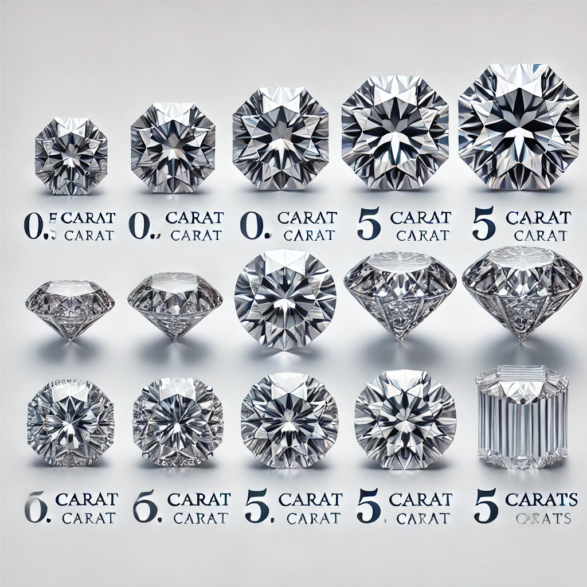
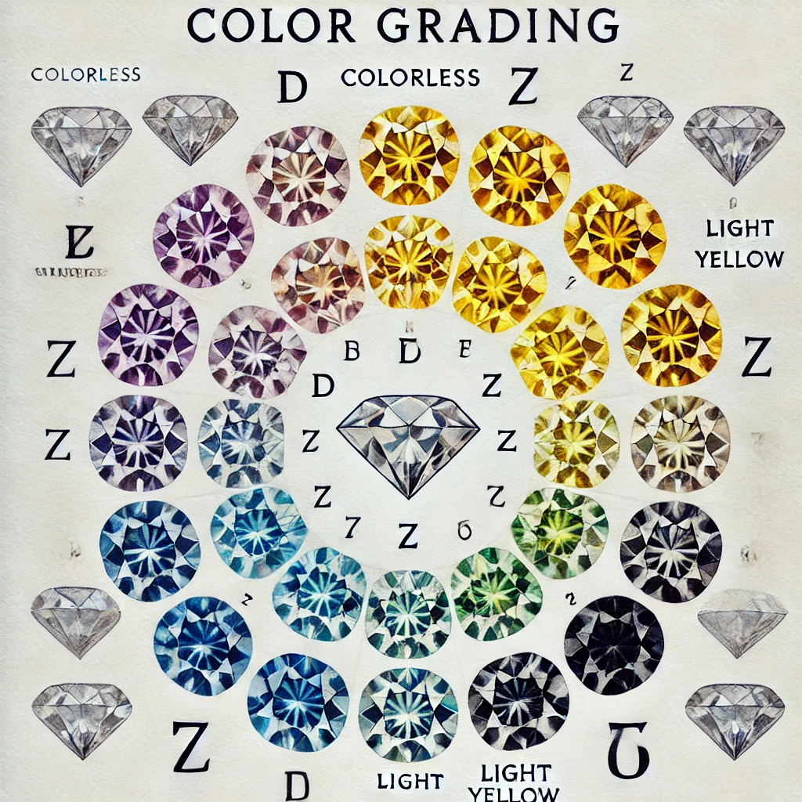
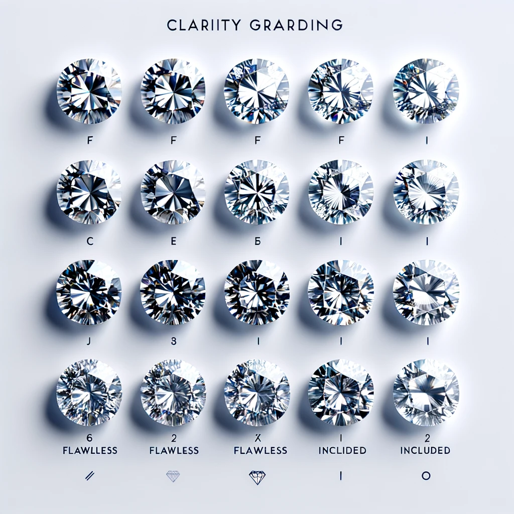
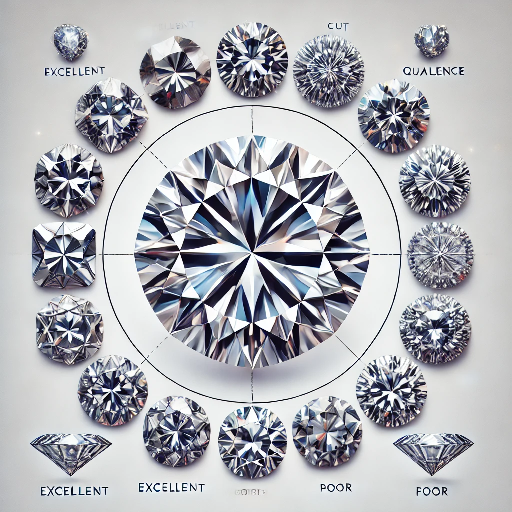
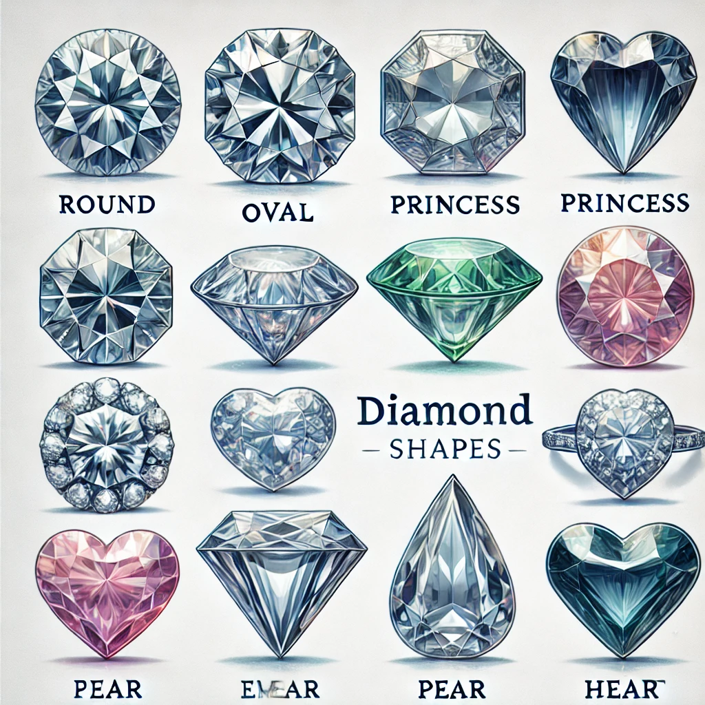
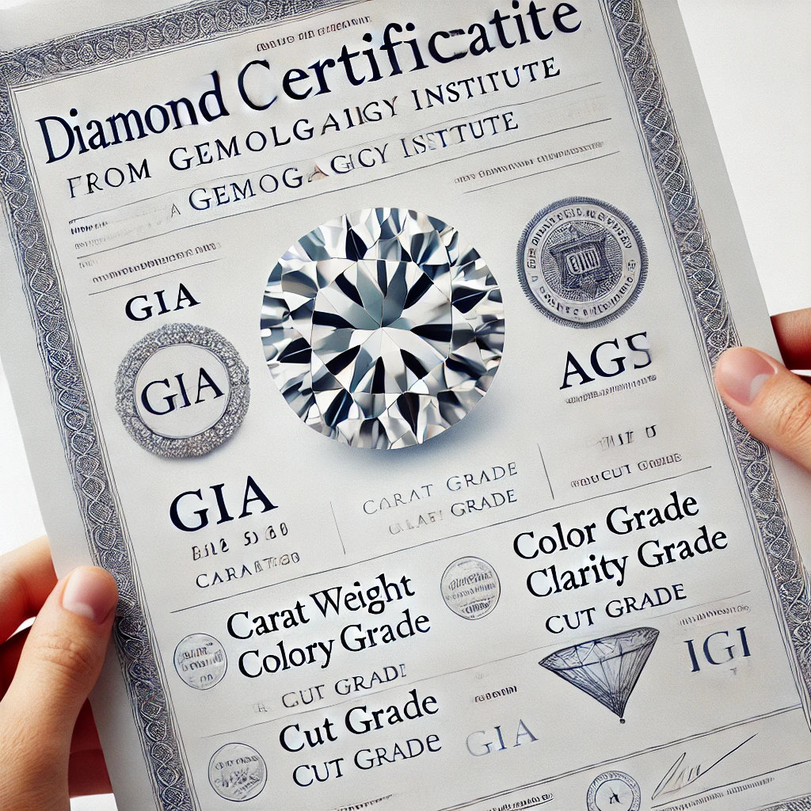

The Diamond Shop
Cơ sở 1: Số 12b E4 ngõ 1A Tôn Thất Tùng
Cơ sở 2: Số 17 Trần Đình Xu - TP. Hồ Chí Minh
Mở cửa: 9h00 - 22h kể cả thứ 7 và Chủ Nhật
Số Điện Thoại: 0908 650 438
Những Tiêu Chí Chọn Một Viên Kim Cương Tự Nhiên
Giới thiệu
Kim cương tự nhiên là biểu tượng của sự sang trọng, quý phái và vĩnh cửu. Việc chọn một viên kim cương không chỉ đơn thuần dựa trên vẻ đẹp bên ngoài mà còn cần xem xét nhiều tiêu chí quan trọng để đảm bảo giá trị và chất lượng. Dưới đây là sáu yếu tố chính giúp bạn lựa chọn được một viên kim cương hoàn hảo.
1. Trọng lượng (Carat)
Trọng lượng của kim cương được đo bằng đơn vị carat (ct), trong đó 1 carat tương đương với 0,2 gram. Trọng lượng càng lớn, viên kim cương càng hiếm và có giá trị cao. Tuy nhiên, một viên kim cương nhỏ hơn nhưng có giác cắt, màu sắc và độ tinh khiết tốt vẫn có thể tỏa sáng rực rỡ hơn một viên có carat lớn nhưng không đạt chất lượng cao.
2. Màu sắc (Color)
Kim cương tự nhiên có nhiều cấp độ màu sắc khác nhau, được phân loại theo thang đo từ D (không màu, hiếm và có giá trị cao nhất) đến Z (có sắc vàng hoặc nâu nhạt). Những viên kim cương không màu thường được ưa chuộng hơn do khả năng phản chiếu ánh sáng tối đa, tạo ra vẻ đẹp lấp lánh và tinh khiết.
3. Độ tinh khiết (Clarity)
Độ tinh khiết của kim cương được đánh giá dựa trên số lượng, kích thước và vị trí của các tạp chất (inclusion) bên trong hoặc vết trầy xước (blemish) bên ngoài viên đá. Các cấp độ dao động từ FL (Flawless - hoàn hảo, không có tạp chất) đến I (Included - có tạp chất rõ ràng). Một viên kim cương có độ tinh khiết cao sẽ giúp ánh sáng truyền qua tốt hơn, tăng thêm độ sáng và giá trị của nó.
4. Giác cắt (Cut)
Giác cắt là yếu tố quan trọng nhất quyết định độ lấp lánh của kim cương. Một viên kim cương có giác cắt tốt sẽ phản xạ ánh sáng tối ưu, tạo nên hiệu ứng rực rỡ. Các cấp độ giác cắt được đánh giá từ Excellent (xuất sắc), Very Good (rất tốt), Good (tốt), Fair (khá) đến Poor (kém). Một viên kim cương dù có trọng lượng lớn nhưng giác cắt không đạt tiêu chuẩn thì cũng không thể tỏa sáng hoàn hảo.
5. Hình dạng (Shape)
Kim cương có nhiều hình dạng khác nhau, phổ biến nhất là hình tròn (Round), vì nó có khả năng phản xạ ánh sáng tốt nhất. Ngoài ra, còn có các kiểu dáng khác như hình bầu dục (Oval), vuông (Princess), chữ nhật (Emerald), giọt nước (Pear), trái tim (Heart)… Mỗi hình dạng mang lại vẻ đẹp riêng, phù hợp với sở thích và phong cách của từng người.
6. Chứng nhận (Certification)
Khi mua kim cương, điều quan trọng là kiểm tra chứng nhận từ các tổ chức uy tín như GIA (Gemological Institute of America), AGS (American Gem Society), IGI (International Gemological Institute)... Chứng nhận này cung cấp thông tin chi tiết về các đặc điểm của viên kim cương, giúp người mua yên tâm về chất lượng, nguồn gốc cũng như giá trị của nó.
